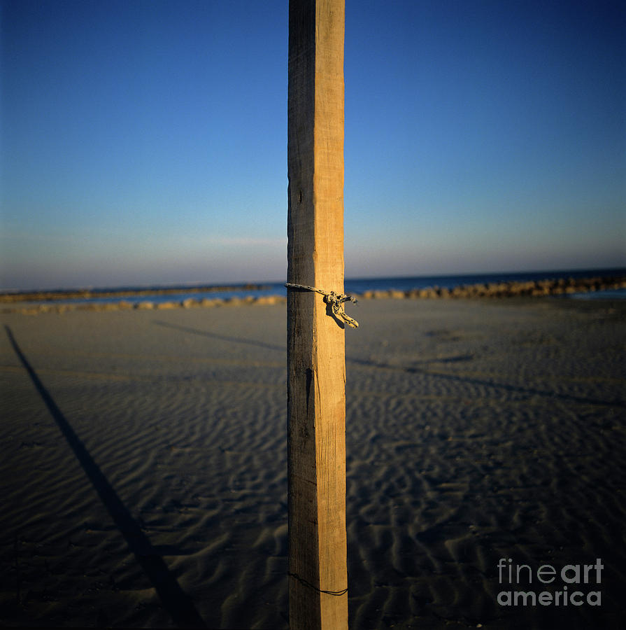
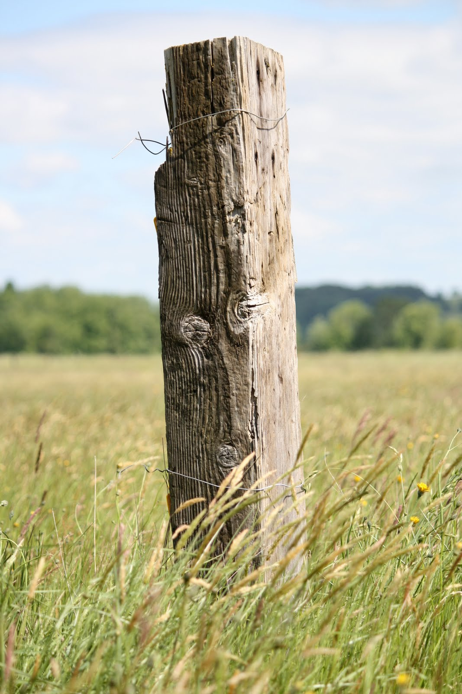
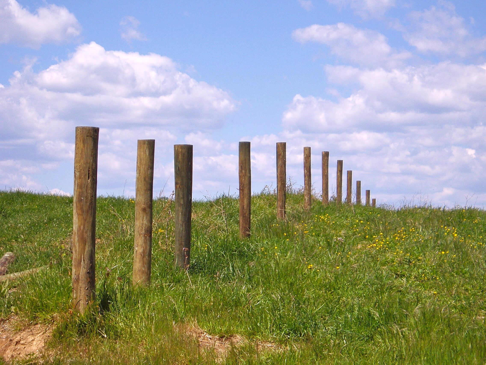
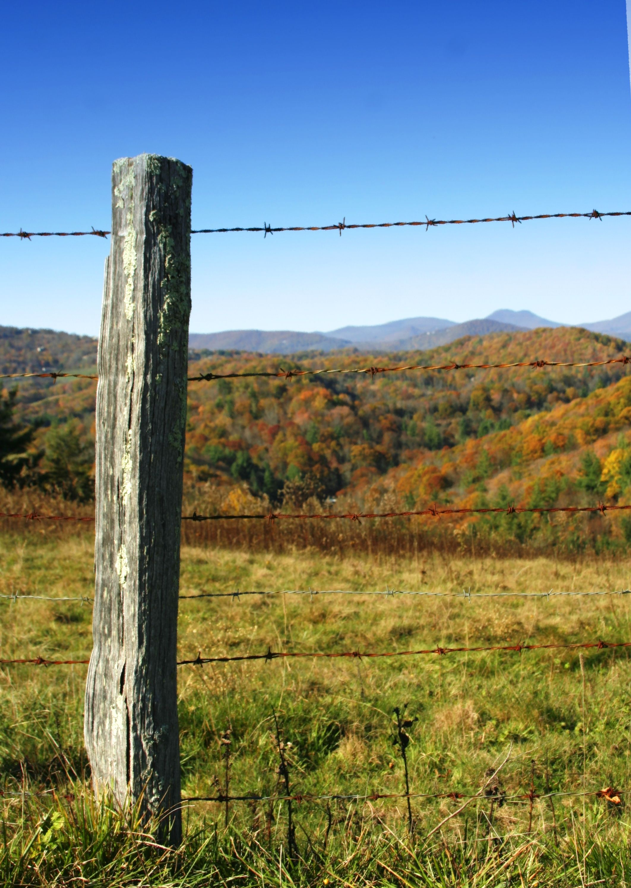

<!DOCTYPE html>
<html lang="en">

<head>

    <meta charset="UTF-8">
    <title>Nothing</title>

    <!--<script src="https://unpkg.com/react@16/umd/react.development.js"></script>-->
    <!--<script src="https://unpkg.com/react-dom@16/umd/react-dom.development.js"></script>-->
    <!--<script src="https://unpkg.com/babel-standalone@6.15.0/babel.min.js"></script>-->

    <link href="https://fonts.googleapis.com/css?family=Open+Sans:300,400,600" rel="stylesheet">

    <link rel="shortcut icon"
          type="image/x-icon"
          href="images/icon.png?v4">

    <meta name="viewport" content="width=device-width, initial-scale=1">

    <!--<link rel="stylesheet" type="text/css" href="css/index.css">-->
    <!--<link rel="stylesheet" type="text/css" href="css/media.css">-->

    <!--<script src="js/index.js"></script>-->

    <!--<script src="js/utils/socket.io.slim.js"></script>-->
    <!--<script src="js/utils/ga.js"></script>-->

</head>

<body>

    <div id="root"></div>

    <!--
      Note: this page is a great way to try React but it's not suitable for production.
      It slowly compiles JSX with Babel in the browser and uses a large development build of React.

      To set up a production-ready React build environment, follow these instructions:
      * https://reactjs.org/docs/add-react-to-a-new-app.html
      * https://reactjs.org/docs/add-react-to-an-existing-app.html

      You can also use React without JSX, in which case you can remove Babel:
      * https://reactjs.org/docs/react-without-jsx.html
      * https://reactjs.org/docs/cdn-links.html
    -->

    <!--<div class="block">-->
        <!--<div class="text" contenteditable="true">-->
            <!--New post-->
        <!--</div>-->
    <!--</div>-->
    <!---->
    <!--<div class="block">-->
        <!--<div class="text" contenteditable="true">-->
            <!--<div class="title">Post</div>-->
            <!--&lt;!&ndash;<br/>&ndash;&gt;-->
            <!--&lt;!&ndash;<br/>&ndash;&gt;-->
            <!--Posts are typically displayed in reverse chronological order, so that the most recent post appears first, at the top of the web page. Until 2009, blogs were usually the work of a single individual, occasionally of a small group, and often covered a single subject or topic. In the 2010s, "multi-author blogs" (MABs) have developed, with posts written by large numbers of authors and sometimes professionally edited.-->
        <!--</div>-->
        <!--<div class="images">-->
            <!---->
            <!---->
            <!---->
            <!---->
            <!---->
        <!--</div>-->
    <!--</div>-->
    <!---->
    <!--<div class="block">-->
        <!--<div class="text" contenteditable="true">-->
            <!--<div class="title">Post</div>-->
    <!---->
            <!--Posts are typically displayed in reverse chronological order, so that the most recent post appears first, at the top of the web page. Until 2009, blogs were usually the work of a single individual, occasionally of a small group, and often covered a single subject or topic. In the 2010s, "multi-author blogs" (MABs) have developed, with posts written by large numbers of authors and sometimes professionally edited.-->
        <!--</div>-->
        <!--<div class="images">-->
            <!---->
            <!---->
            <!---->
            <!---->
            <!---->
        <!--</div>-->
    <!--</div>-->

</body>

</html>